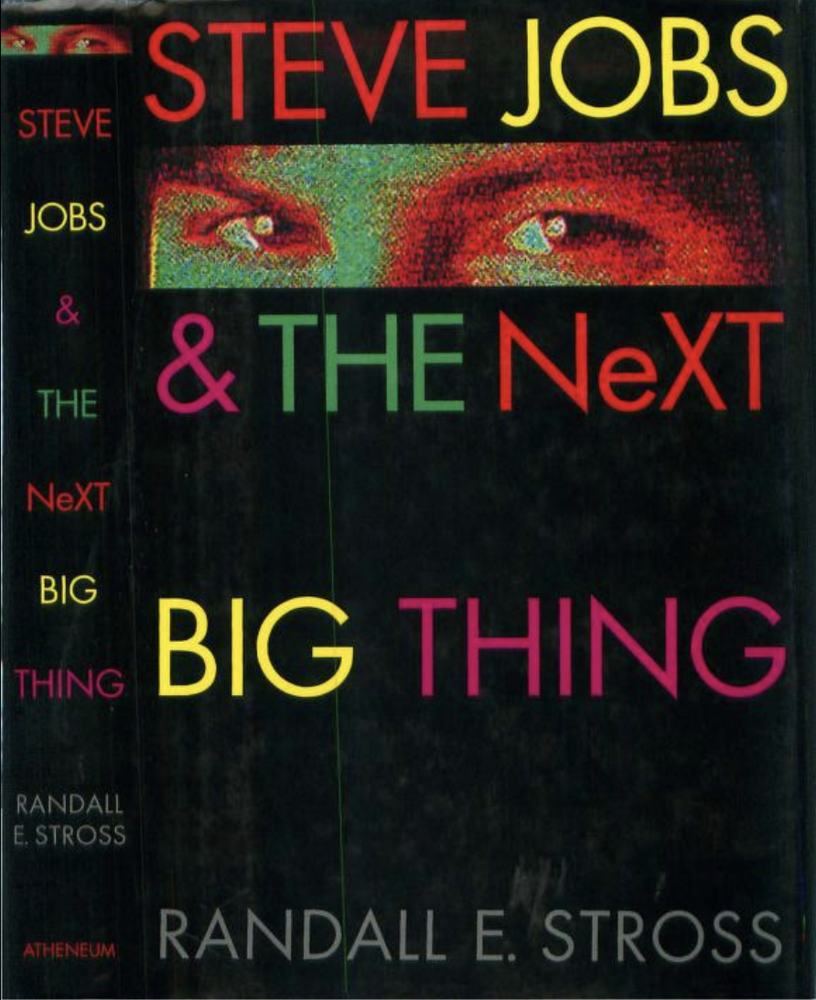
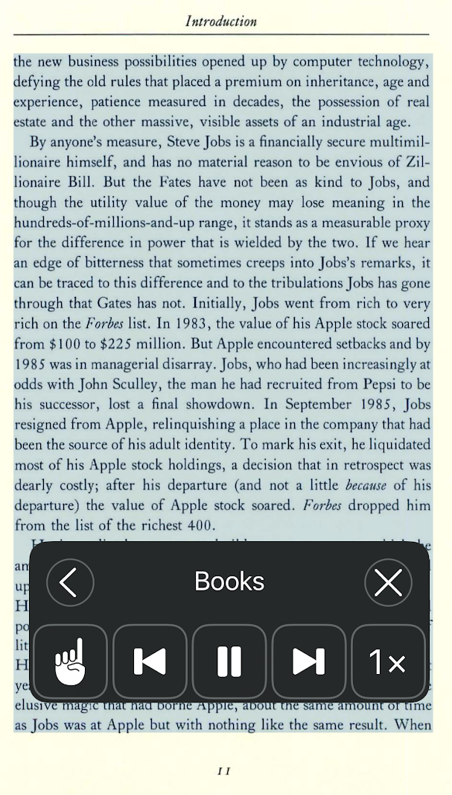

Poor Man's Audiobook Reader
I’m currently reading a contemporary history of Steve Jobs’s time with the creation and unraveling of NeXT Computer - Steve Jobs and the NeXT Big Thing. 
Today, popular culture paints him as an iconic figure, but when the book was written in 1993 NeXT was a money pit, only kept alive with cash infusions from outside investors as money was burnt. It’s a wild ride, I highly recommend it, especially with hindsight.
Unfortunately, reading books cover to cover is hard for me. I rely on audiobooks so I can ride the bus or do dishes while I absorb a book. Unfortunately, there is no audiobook release of this book.
I found the book in PDF form on archive.org. Unfortunately PDFs are more of a page layout language like HTML instead of a store of text.
If you were to use Text to Speech functionality say - speak visible content on your PC or phone on a typical website or PDF you have to ‘baby sit’ what is being read so that the reader doesn’t get ‘lost’ or get caught up on footnotes or stop abruptly or be unable to handle a change in fonts. It’s not obvious how broken this functionality is.

Plain text is the best for a text to speech program. Luckily, archive.org provides a plain text version of the book which was created via optical character recognition (see the archive.org site). Short of a few footnotes, it’s 95% of what we need.
Except… text to speech generation is a high CPU task, Apple iOS doesn’t like long running tasks. You can’t scrub back and forth within a document like you can with an audio book or video. Also, it seems that this functionality within iOS doesn’t see as much development as other parts of the OS, it’s generally a janky experience more optimized for the vision impaired than my use case.
So, we need an offline bulk text to speech generator. Luckily, macOS provides just the very thing hidden as one of the standard MacOS command line utilities - this is the say utility.
say -v Bad\ News "Captain, you are needed on the bridge" --rate=150
example call - see the man pages “man say”
say --voice=Ava \ # use '?' to get a list of all the available voices
--input-file Steve_Jobs_\&_the_NeXT_Big_Thing_1993_djvu.txt \ # path to plain text file
--data-format=m4b \ # File for the output format, m4b is the apple's audiobook equavalent of m4a see 'say --file-format='?' ' for the list of these
--output-file=MyOutputFile.m4b \ # output file
--rate=150 # speaking rate in words per minute, to your taste.
--progress # print the progress
This is awesome! But after letting it run for one hour the CPU is still at 100% and the process is consuming 2.3 GB of RAM and the output file MyOutoutFile.m4b is about 50 MB on disk.
Something is up … let’s see the word count of this file.
wc -lw Steve_Jobs_\&_the_NeXT_Big_Thing_1993_djvu.txt
14908 122808 Steve_Jobs_&_the_NeXT_Big_Thing_1993_djvu.txt
so 15000 lines, 122000 words - at 150 words / minute this is about 13 hours to read through all of it, and an audiobook of that length is roughly 1 GB.
Maybe the compression or some other non-default setting is mucking with this? I remove everything except the input and output files parameters and I still see the same poor performance.
Let’s break this down into 1000 line chunks, and feed each one to say.
split -d -l 1000 Steve_Jobs_\&_the_NeXT_Big_Thing_1993_djvu.txt Steve1000__
time for file in Steve1000__*; do say \
-f "$file" \
-o "$file.m4b" \
--file-format=m4bf \
--rate=150 \
--progress; \
done;
Well that’s interesting, the process completed in 10 minutes and produced 14 files that comprise the audio book.
But, I don’t want 14 parts, I’d like, say, three parts of 5000 lines each. I re-run the script …
split -d -l 5000 Steve_Jobs_\&_the_NeXT_Big_Thing_1993_djvu.txt Steve5000__
And each part takes 30 minutes to generate, for a total of 90 minutes
| Lines of text per part | Time To Generate |
|---|---|
| 1000 | 15 minutes |
| 5000 | 90 minutes |
| 15000 | did not complete |
So, what’s the take away here?
Intuitively, generating voice from a text file would be a linear operation. Text goes in, Audio goes out, no doubling back through a stream. But, there’s clearly a bug in the implementation of say that makes the run time be something larger than O(n^2). Apparently having say spew out hours of audio for an entire book was never a tested use case. Except, say has been around for as long as MacOSX has been around, one would think all the bugs have been worked out. Apparently not; you have to test and test and test, there will always be surprises.